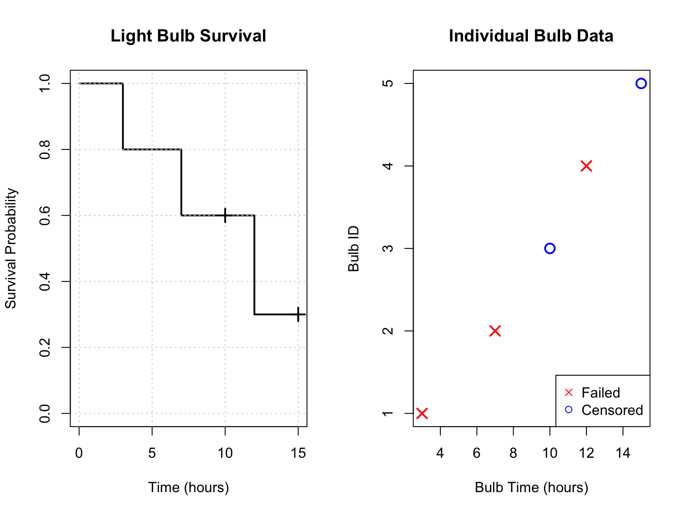
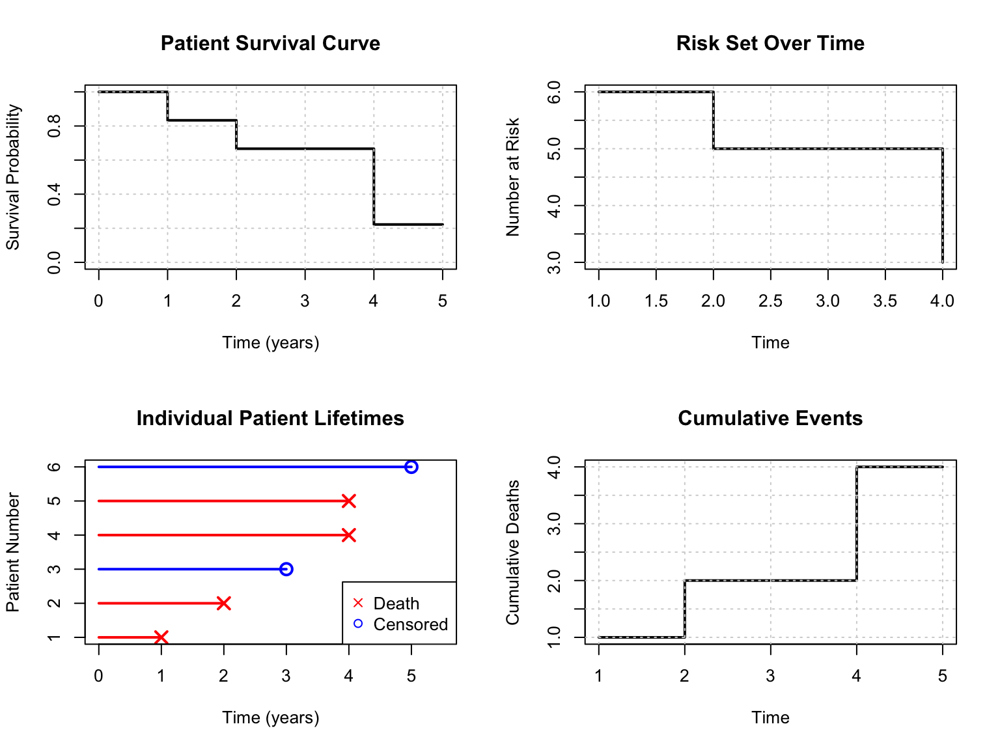
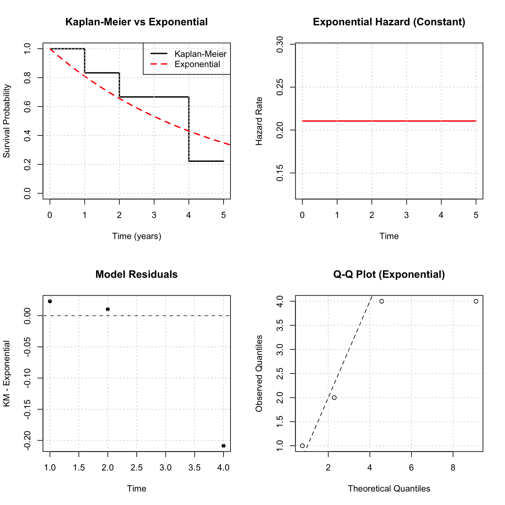
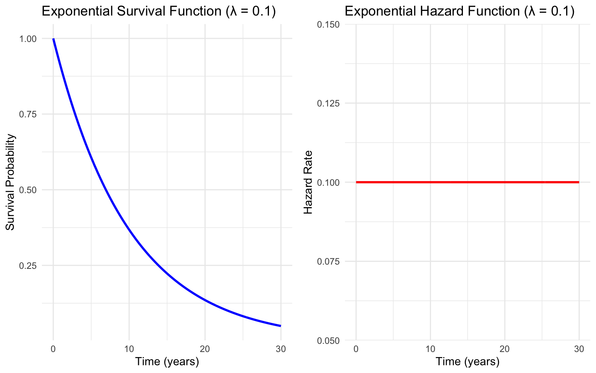
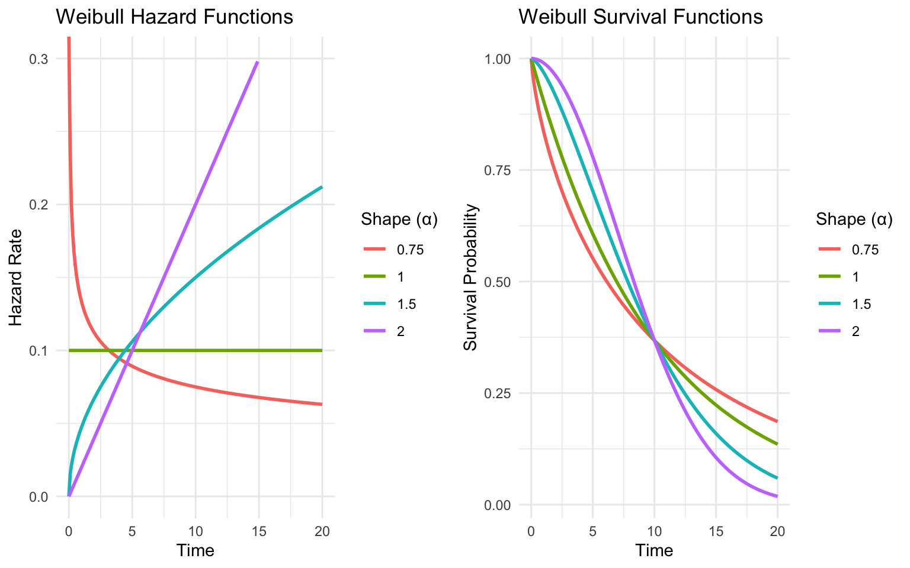

library(survival)
library(ggplot2)
library(dplyr)
library(gridExtra)
# Set random seed for reproducibility
set.seed(123)Chapter 2: Basic Principles of Survival Analysis
Understanding Hazard and Survival Functions
1 Learning Objectives
- Define and interpret survival and hazard functions
- Calculate survival probabilities from hazard functions
- Work with parametric survival distributions (exponential, Weibull, gamma)
- Compute mean and median survival times
- Apply maximum likelihood estimation to simple survival problems
2 Setup
3 The Hazard and Survival Functions
3.1 Key Definitions
The survival function defines the probability of surviving up to time \(t\):
\[S(t) = P(T > t), \quad 0 < t < \infty\]
- Takes value 1 at time 0
- Decreases (or remains constant) over time
- Never drops below 0
- Right continuous
The hazard function is the instantaneous failure rate:
\[h(t) = \lim_{\delta \to 0} \frac{P(t < T < t + \delta | T > t)}{\delta}\]
- Also called the intensity function or force of mortality
- Probability of failure in the next small interval, given survival to time \(t\)
3.2 Key Relationships
The hazard and survival functions are related by:
\[h(t) = \frac{f(t)}{S(t)}\]
where \(f(t)\) is the probability density function.
The cumulative hazard function is:
\[H(t) = \int_0^t h(u) du\]
And the survival function can be expressed as:
\[S(t) = \exp(-H(t))\]
4 Light Bulb Demonstration: Survival Analysis in Action
4.1 Exercise 0: Physical Demonstration (20 minutes)
Materials: 5 light bulbs with failure times pre-marked
Let’s make survival analysis concrete with a physical demonstration.
4.1.1 Part A: Data Collection (5 minutes)
Reveal the failure times written on each bulb:
Bulb A: Failed at ___ hours
Bulb B: Failed at ___ hours
Bulb C: Censored at ___ hours (still working when removed)
Bulb D: Failed at ___ hours
Bulb E: Censored at ___ hours (still working when removed)4.1.2 Part B: Manual S(t) Construction (10 minutes)
Step 1: Organize events chronologically
Time ___: Bulb ___ fails
Time ___: Bulb ___ fails
Time ___: Bulb ___ censored
Time ___: Bulb ___ fails
Time ___: Bulb ___ censoredStep 2: Build survival table by hand
| Time | At Risk | Deaths | Censored | Conditional Survival | S(t) |
|---|---|---|---|---|---|
| 0 | 5 | 0 | 0 | 1.0 | 1.0 |
| ___ | ___ | ___ | ___ | / | ___ |
| ___ | ___ | ___ | ___ | / | ___ |
| ___ | ___ | ___ | ___ | / | ___ |
| ___ | ___ | ___ | ___ | / | ___ |
| ___ | ___ | ___ | ___ | / | ___ |
Step 3: Draw survival curve on blackboard
- Plot time on x-axis, S(t) on y-axis
- Show step function dropping only at death times
- Mark censoring points with tick marks
4.1.3 Part C: R Visualization (5 minutes)
# Input actual class data here
bulb_times <- c(3, 7, 10, 12, 15) # Replace with actual times
bulb_status <- c(1, 1, 0, 1, 0) # 1=failed, 0=censored
# Manual calculation verification
cat("Manual Calculations:\n")Manual Calculations:cat("Bulb-hours:", sum(bulb_times), "\n")Bulb-hours: 47 cat("Failures:", sum(bulb_status), "\n")Failures: 3 cat("Failure rate:", round(sum(bulb_status)/sum(bulb_times), 4), "per hour\n\n")Failure rate: 0.0638 per hour# Kaplan-Meier curve
bulb_surv <- Surv(bulb_times, bulb_status)
km_fit <- survfit(bulb_surv ~ 1)
# Create detailed plot
par(mfrow=c(1,2))
# Plot 1: Basic survival curve
plot(km_fit, xlab="Time (hours)", ylab="Survival Probability",
main="Light Bulb Survival", conf.int=FALSE, lwd=2)
grid()
# Add censoring marks
censor_times <- bulb_times[bulb_status == 0]
if(length(censor_times) > 0) {
censor_surv <- summary(km_fit, times=censor_times)$surv
points(censor_times, censor_surv, pch=3, cex=1.5, lwd=2)
}
# Plot 2: Step-by-step data
plot(bulb_times, 1:length(bulb_times),
pch=ifelse(bulb_status==1, 4, 1),
col=ifelse(bulb_status==1, "red", "blue"),
xlab="Bulb Time (hours)", ylab="Bulb ID",
main="Individual Bulb Data",
cex=1.5, lwd=2)
legend("bottomright", c("Failed", "Censored"),
pch=c(4,1), col=c("red", "blue"))
par(mfrow=c(1,1))
# Print survival table
cat("Kaplan-Meier Table:\n")Kaplan-Meier Table:print(summary(km_fit))Call: survfit(formula = bulb_surv ~ 1)
time n.risk n.event survival std.err lower 95% CI upper 95% CI
3 5 1 0.8 0.179 0.5161 1
7 4 1 0.6 0.219 0.2933 1
12 2 1 0.3 0.239 0.0631 15 Building S(t) Step-by-Step: Patient Data
5.1 Exercise 1: Manual Construction (15 minutes)
Dataset: 6 patients - let’s build the survival curve by hand
| Patient | Time | Status |
|---|---|---|
| 1 | 1 | Death |
| 2 | 2 | Death |
| 3 | 3 | Censored |
| 4 | 4 | Death |
| 5 | 4 | Death |
| 6 | 5 | Censored |
5.1.1 Step-by-Step Manual Calculation (10 minutes)
Create survival table together:
| Time | At Risk | Deaths | Conditional Survival | S(t) | Calculation |
|---|---|---|---|---|---|
| 0 | 6 | 0 | 1.0 | 1.0 | Starting point |
| 1 | ___ | ___ | ___ | ___ | 1.0 × (___ / ___) |
| 2 | ___ | ___ | ___ | ___ | ___ × (___ / ___) |
| 3 | ___ | ___ | ___ | ___ | No deaths → same |
| 4 | ___ | ___ | ___ | ___ | ___ × (___ / ___) |
| 5 | ___ | ___ | ___ | ___ | ___ × (___ / ___) |
Key Questions to Work Through: 1. At time 3, patient 3 is censored. What happens to S(t)? 2. At time 4, two patients die. How do we handle this? 3. When do we stop calculating?
5.1.2 Visualization in R (5 minutes)
# Patient data
time <- c(1, 2, 3, 4, 4, 5)
status <- c(1, 1, 0, 1, 1, 0)
# Manual calculations first
cat("Manual Verification:\n")Manual Verification:cat("Person-time:", sum(time), "years\n")Person-time: 19 yearscat("Deaths:", sum(status), "\n")Deaths: 4 cat("Overall rate:", round(sum(status)/sum(time), 4), "per year\n\n")Overall rate: 0.2105 per year# Survival analysis
surv_obj <- Surv(time, status)
km_patient <- survfit(surv_obj ~ 1)
# Create comprehensive visualization
par(mfrow=c(2,2))
# Plot 1: Survival curve
plot(km_patient, xlab="Time (years)", ylab="Survival Probability",
main="Patient Survival Curve", conf.int=FALSE, lwd=2)
grid()
# Plot 2: Risk set over time
times <- sort(unique(time[status==1]))
risk_set <- sapply(times, function(t) sum(time >= t))
plot(times, risk_set, type="s", lwd=2,
xlab="Time", ylab="Number at Risk",
main="Risk Set Over Time")
grid()
# Plot 3: Individual patient data (dumbbell timeline)
plot(time, 1:6, pch=ifelse(status==1, 4, 1),
col=ifelse(status==1, "red", "blue"),
xlab="Time (years)", ylab="Patient Number",
main="Individual Patient Lifetimes",
cex=1.5, lwd=2, xlim=c(0, max(time)*1.1))
# Add horizontal lines from 0 to each event time
for(i in 1:6) {
segments(0, i, time[i], i,
col=ifelse(status[i]==1, "red", "blue"),
lwd=2)
}
legend("bottomright", c("Death", "Censored"),
pch=c(4,1), col=c("red", "blue"))
# Plot 4: Cumulative events
cum_events <- cumsum(status[order(time)])
ordered_times <- sort(time)
plot(ordered_times, cum_events, type="s", lwd=2,
xlab="Time", ylab="Cumulative Deaths",
main="Cumulative Events")
grid()
par(mfrow=c(1,1))
# Detailed survival table
cat("Detailed Survival Table:\n")Detailed Survival Table:print(summary(km_patient))Call: survfit(formula = surv_obj ~ 1)
time n.risk n.event survival std.err lower 95% CI upper 95% CI
1 6 1 0.833 0.152 0.5827 1
2 5 1 0.667 0.192 0.3786 1
4 3 2 0.222 0.192 0.0407 16 Exponential Model: Theory Meets Practice
6.1 Exercise 2: By-Hand Exponential Calculations (10 minutes)
Using our patient data, let’s fit an exponential model manually.
6.1.1 MLE Calculation by Hand
λ̂ = Deaths ÷ Person-time = ___ ÷ ___ = ___ per year6.1.2 Exponential Predictions
Mean survival = 1/λ̂ = ___
Median survival = ln(2)/λ̂ = ___
S(3) = exp(-λ̂ × 3) = ___6.1.3 Compare Models Visually
# Calculate MLE
d <- sum(status)
V <- sum(time)
lambda_hat <- d/V
cat("Exponential Model:\n")Exponential Model:cat("λ̂ =", round(lambda_hat, 4), "per year\n")λ̂ = 0.2105 per yearcat("Mean survival =", round(1/lambda_hat, 2), "years\n")Mean survival = 4.75 yearscat("Median survival =", round(log(2)/lambda_hat, 2), "years\n\n")Median survival = 3.29 years# Create comparison plots
par(mfrow=c(2,2))
# Plot 1: Both survival curves
plot(km_patient, conf.int=FALSE, lwd=2,
xlab="Time (years)", ylab="Survival Probability",
main="Kaplan-Meier vs Exponential")
curve(exp(-lambda_hat * x), from=0, to=6, add=TRUE,
col="red", lwd=2, lty=2)
legend("topright", c("Kaplan-Meier", "Exponential"),
col=c("black", "red"), lwd=2, lty=c(1,2))
grid()
# Plot 2: Hazard functions
plot(c(0, max(time)), c(lambda_hat, lambda_hat), type="l",
lwd=2, col="red", xlab="Time", ylab="Hazard Rate",
main="Exponential Hazard (Constant)")
grid()
# Plot 3: Residuals
km_times <- summary(km_patient)$time
km_surv <- summary(km_patient)$surv
exp_surv <- exp(-lambda_hat * km_times)
plot(km_times, km_surv - exp_surv, type="p", pch=16,
xlab="Time", ylab="KM - Exponential",
main="Model Residuals")
abline(h=0, lty=2)
grid()
# Plot 4: Q-Q plot for exponential
theoretical_quantiles <- qexp(ppoints(length(time[status==1])), rate=lambda_hat)
observed_quantiles <- sort(time[status==1])
plot(theoretical_quantiles, observed_quantiles,
xlab="Theoretical Quantiles", ylab="Observed Quantiles",
main="Q-Q Plot (Exponential)")
abline(0, 1, lty=2)
grid()
par(mfrow=c(1,1))
# Summary comparison
cat("Model Comparison at t=3:\n")Model Comparison at t=3:km_3 <- summary(km_patient, times=3)$surv
exp_3 <- exp(-lambda_hat * 3)
cat("Kaplan-Meier S(3) =", round(km_3, 3), "\n")Kaplan-Meier S(3) = 0.667 cat("Exponential S(3) =", round(exp_3, 3), "\n")Exponential S(3) = 0.532 cat("Difference =", round(km_3 - exp_3, 3), "\n")Difference = 0.135 Let’s work through a small dataset by hand. Consider these 6 patients:
| Patient | Time | Status |
|---|---|---|
| 1 | 7 | Death |
| 2 | 6 | Death |
| 3 | 6 | Censored |
| 4 | 5 | Death |
| 5 | 2 | Censored |
| 6 | 4 | Censored |
6.2 Exercise 1A: Basic Calculations (Do by Hand)
Step 1: Calculate the total person-time at risk
Person-time = 7 + 6 + 6 + 5 + 2 + 4 = ___ yearsStep 2: Count the total number of deaths
Deaths = ___Step 3: Calculate the overall hazard rate (deaths/person-time)
Hazard rate = Deaths / Person-time = ___ / ___ = ___6.3 Exercise 1B: Verify with R
# Patient data
time <- c(7, 6, 6, 5, 2, 4)
status <- c(1, 1, 0, 1, 0, 0) # 1 = death, 0 = censored
# Calculate person-time and deaths
person_time <- sum(time)
deaths <- sum(status)
print(paste("Person-time:", person_time))[1] "Person-time: 30"print(paste("Deaths:", deaths))[1] "Deaths: 3"print(paste("Hazard rate:", deaths/person_time))[1] "Hazard rate: 0.1"7 Parametric Survival Distributions
7.1 The Exponential Distribution
The simplest survival distribution has a constant hazard: \(h(t) = \lambda\)
Key Properties:
- Hazard: \(h(t) = \lambda\) (constant)
- Cumulative hazard: \(H(t) = \lambda t\)
- Survival: \(S(t) = e^{-\lambda t}\)
- Mean survival: \(E(T) = 1/\lambda\)
- Median survival: \(t_{med} = \ln(2)/\lambda\)
7.2 Exercise 2: Exponential Distribution Calculations (By Hand)
Suppose we have an exponential distribution with \(\lambda = 0.1\) (per year).
Step 1: Calculate the probability of surviving beyond 5 years
S(5) = e^(-λt) = e^(-0.1 × 5) = e^(-0.5) = ___Step 2: Calculate the mean survival time
E(T) = 1/λ = 1/0.1 = ___ yearsStep 3: Calculate the median survival time
t_med = ln(2)/λ = 0.693/0.1 = ___ yearsStep 4: What’s the hazard of death at any time t?
h(t) = ___ (constant)7.3 Verify Your Calculations
lambda <- 0.1
# Survival at 5 years
surv_5 <- exp(-lambda * 5)
print(paste("S(5) =", round(surv_5, 4)))[1] "S(5) = 0.6065"# Mean survival
mean_surv <- 1/lambda
print(paste("Mean survival =", mean_surv, "years"))[1] "Mean survival = 10 years"# Median survival
median_surv <- log(2)/lambda
print(paste("Median survival =", round(median_surv, 2), "years"))[1] "Median survival = 6.93 years"# Verify: S(median) should equal 0.5
print(paste("S(median) =", round(exp(-lambda * median_surv), 3)))[1] "S(median) = 0.5"7.4 Visualizing the Exponential Distribution
# Create time sequence
time_seq <- seq(0, 30, 0.1)
# Calculate survival and hazard functions
surv_func <- exp(-lambda * time_seq)
hazard_func <- rep(lambda, length(time_seq))
# Create plots
p1 <- ggplot(data.frame(time = time_seq, survival = surv_func),
aes(x = time, y = survival)) +
geom_line(size = 1, color = "blue") +
labs(title = "Exponential Survival Function (λ = 0.1)",
x = "Time (years)", y = "Survival Probability") +
theme_minimal()
p2 <- ggplot(data.frame(time = time_seq, hazard = hazard_func),
aes(x = time, y = hazard)) +
geom_line(size = 1, color = "red") +
labs(title = "Exponential Hazard Function (λ = 0.1)",
x = "Time (years)", y = "Hazard Rate") +
theme_minimal()
grid.arrange(p1, p2, ncol = 2)
8 The Weibull Distribution
More flexible than exponential, with hazard function:
\[h(t) = \alpha \lambda^\alpha t^{\alpha-1}\]
Parameters:
- \(\alpha\) = shape parameter
- \(\lambda\) = scale parameter
Key Properties:
- When \(\alpha = 1\): reduces to exponential
- When \(\alpha > 1\): increasing hazard
- When \(\alpha < 1\): decreasing hazard
8.1 Exercise 3: Weibull Distribution (By Hand)
Consider a Weibull distribution with \(\alpha = 2\) and \(\lambda = 0.1\).
Step 1: What type of hazard pattern does this represent?
Since α = 2 > 1, the hazard is _______ over timeStep 2: Calculate the hazard at time t = 5 years
h(5) = α λ^α t^(α-1) = 2 × (0.1)^2 × 5^(2-1) = 2 × 0.01 × 5 = ___Step 3: Calculate the cumulative hazard at t = 5
H(5) = (λt)^α = (0.1 × 5)^2 = (0.5)^2 = ___Step 4: Calculate the survival probability at t = 5
S(5) = exp(-H(5)) = exp(-0.25) = ___8.2 Verify Weibull Calculations
alpha <- 2
lambda <- 0.1
t <- 5
# Hazard at t=5
hazard_5 <- alpha * (lambda^alpha) * (t^(alpha-1))
print(paste("h(5) =", hazard_5))[1] "h(5) = 0.1"# Cumulative hazard at t=5
cum_hazard_5 <- (lambda * t)^alpha
print(paste("H(5) =", cum_hazard_5))[1] "H(5) = 0.25"# Survival at t=5
surv_5_weibull <- exp(-cum_hazard_5)
print(paste("S(5) =", round(surv_5_weibull, 4)))[1] "S(5) = 0.7788"# Verify using R's built-in function
surv_5_r <- pweibull(5, shape=alpha, scale=1/lambda, lower.tail=FALSE)
print(paste("S(5) using R =", round(surv_5_r, 4)))[1] "S(5) using R = 0.7788"8.3 Comparing Different Weibull Shapes
# Define parameters for comparison
time_seq <- seq(0, 20, 0.1)
lambda <- 0.1
# Different shape parameters
alphas <- c(0.75, 1, 1.5, 2)
# Create data frame for plotting
weibull_data <- data.frame()
for(alpha in alphas) {
hazard <- alpha * (lambda^alpha) * (time_seq^(alpha-1))
survival <- exp(-(lambda * time_seq)^alpha)
temp_data <- data.frame(
time = time_seq,
hazard = hazard,
survival = survival,
alpha = as.factor(alpha)
)
weibull_data <- rbind(weibull_data, temp_data)
}
# Plot hazard functions
p1 <- ggplot(weibull_data, aes(x = time, y = hazard, color = alpha)) +
geom_line(size = 1) +
labs(title = "Weibull Hazard Functions",
x = "Time", y = "Hazard Rate",
color = "Shape (α)") +
theme_minimal() +
ylim(0, 0.3)
# Plot survival functions
p2 <- ggplot(weibull_data, aes(x = time, y = survival, color = alpha)) +
geom_line(size = 1) +
labs(title = "Weibull Survival Functions",
x = "Time", y = "Survival Probability",
color = "Shape (α)") +
theme_minimal()
grid.arrange(p1, p2, ncol = 2)
9 Maximum Likelihood Estimation
9.1 The Likelihood Function
For survival data with censoring, the likelihood is:
\[L(\theta) = \prod_{i=1}^n h(t_i; \theta)^{\delta_i} S(t_i; \theta)\]
where \(\delta_i = 1\) for deaths and \(\delta_i = 0\) for censored observations.
9.2 Exercise 4: MLE for Exponential Distribution (By Hand)
Using our 6-patient dataset from Exercise 1:
The log-likelihood for exponential distribution is: \[\ell(\lambda) = d \log(\lambda) - \lambda V\]
where \(d\) = number of deaths and \(V\) = total person-time.
Step 1: Write the log-likelihood for our data
d = ___ deaths
V = ___ person-years
ℓ(λ) = ___ log(λ) - λ × ___Step 2: Find the MLE by taking the derivative and setting to zero
dℓ/dλ = d/λ - V = 0
Solving: λ̂ = d/V = ___ / ___ = ___Step 3: Calculate the variance of the estimate
Var(λ̂) ≈ λ̂²/d = (_____)²/___ = ___
Standard Error = √Var(λ̂) = ___9.3 Verify MLE Calculation
# Our data
time <- c(7, 6, 6, 5, 2, 4)
status <- c(1, 1, 0, 1, 0, 0)
d <- sum(status) # deaths
V <- sum(time) # person-time
# MLE
lambda_hat <- d/V
print(paste("λ̂ =", round(lambda_hat, 4)))[1] "λ̂ = 0.1"# Variance and standard error
var_lambda <- lambda_hat^2 / d
se_lambda <- sqrt(var_lambda)
print(paste("Variance of λ̂ =", round(var_lambda, 6)))[1] "Variance of λ̂ = 0.003333"print(paste("Standard Error =", round(se_lambda, 4)))[1] "Standard Error = 0.0577"# 95% Confidence interval (using normal approximation)
ci_lower <- lambda_hat - 1.96 * se_lambda
ci_upper <- lambda_hat + 1.96 * se_lambda
print(paste("95% CI: (", round(ci_lower, 4), ",", round(ci_upper, 4), ")"))[1] "95% CI: ( -0.0132 , 0.2132 )"10 Hands-On Workshop Exercise
10.1 Exercise 5: Complete Analysis by Hand, Then Verify
You are given this survival dataset:
| Patient | Time | Status |
|---|---|---|
| A | 12 | Death |
| B | 8 | Death |
| C | 15 | Censored |
| D | 10 | Death |
| E | 6 | Censored |
| F | 9 | Death |
Part A: Basic Statistics (Work by hand first)
- Total person-time: ___________
- Number of deaths: ___________
- MLE for exponential λ: ___________
- Mean survival time: ___________
- Median survival time: ___________
Part B: Probability Calculations
Assuming exponential distribution with your estimated λ:
- P(survive > 10 years) = ___________
- P(die between years 5-10) = ___________
- Hazard rate at any time = ___________
Part C: Verify Your Work
# Fill in the values
time_workshop <- c(__, __, __, __, __, __)
status_workshop <- c(__, __, __, __, __, __) # 1=death, 0=censored
# Calculate basic statistics
person_time_total <- sum(time_workshop)
deaths_total <- sum(status_workshop)
lambda_est <- deaths_total / person_time_total
print(paste("Person-time:", person_time_total))
print(paste("Deaths:", deaths_total))
print(paste("λ estimate:", round(lambda_est, 4)))
print(paste("Mean survival:", round(1/lambda_est, 2)))
print(paste("Median survival:", round(log(2)/lambda_est, 2)))
# Probability calculations
prob_survive_10 <- exp(-lambda_est * 10)
prob_die_5_to_10 <- exp(-lambda_est * 5) - exp(-lambda_est * 10)
print(paste("P(survive > 10):", round(prob_survive_10, 4)))
print(paste("P(die between 5-10):", round(prob_die_5_to_10, 4)))10.2 Solution
# Solution
time_workshop <- c(12, 8, 15, 10, 6, 9)
status_workshop <- c(1, 1, 0, 1, 0, 1)
person_time_total <- sum(time_workshop)
deaths_total <- sum(status_workshop)
lambda_est <- deaths_total / person_time_total
print("=== SOLUTION ===")[1] "=== SOLUTION ==="print(paste("Person-time:", person_time_total, "years"))[1] "Person-time: 60 years"print(paste("Deaths:", deaths_total))[1] "Deaths: 4"print(paste("λ estimate:", round(lambda_est, 4)))[1] "λ estimate: 0.0667"print(paste("Mean survival:", round(1/lambda_est, 2), "years"))[1] "Mean survival: 15 years"print(paste("Median survival:", round(log(2)/lambda_est, 2), "years"))[1] "Median survival: 10.4 years"# Probability calculations
prob_survive_10 <- exp(-lambda_est * 10)
prob_die_5_to_10 <- exp(-lambda_est * 5) - exp(-lambda_est * 10)
print(paste("P(survive > 10 years):", round(prob_survive_10, 4)))[1] "P(survive > 10 years): 0.5134"print(paste("P(die between 5-10 years):", round(prob_die_5_to_10, 4)))[1] "P(die between 5-10 years): 0.2031"print(paste("Hazard rate:", round(lambda_est, 4), "(constant)"))[1] "Hazard rate: 0.0667 (constant)"11 Summary and Key Takeaways
11.1 Essential Formulas to Remember
Exponential Distribution: - Survival: \(S(t) = e^{-\lambda t}\)
- Hazard: \(h(t) = \lambda\) (constant) - Mean: \(1/\lambda\) - Median: \(\ln(2)/\lambda\) - MLE: \(\hat{\lambda} = d/V\)
General Relationships: - \(S(t) = \exp(-H(t))\) where \(H(t) = \int_0^t h(u)du\) - \(h(t) = f(t)/S(t)\) - Mean survival = \(\int_0^\infty S(t)dt\)
12 Additional Practice Problems
12.1 Problem 1
If the hazard rate is constant at 0.05 per year, what percentage of patients survive beyond 20 years?
12.2 Problem 2
A study reports a median survival of 8 years. Assuming exponential distribution, what is the hazard rate?
12.3 Problem 3
Given survival times: 3, 5, 7+, 9, 12+ (+ indicates censoring), calculate the MLE for λ.
13 References
Moore, D. Applied Survival Analysis Using R. Chapter 2: Basic Principles of Survival Analysis.
14 Session Information
sessionInfo()R version 4.3.1 (2023-06-16)
Platform: x86_64-apple-darwin20 (64-bit)
Running under: macOS 15.6
Matrix products: default
BLAS: /Library/Frameworks/R.framework/Versions/4.3-x86_64/Resources/lib/libRblas.0.dylib
LAPACK: /Library/Frameworks/R.framework/Versions/4.3-x86_64/Resources/lib/libRlapack.dylib; LAPACK version 3.11.0
locale:
[1] en_US.UTF-8/en_US.UTF-8/en_US.UTF-8/C/en_US.UTF-8/en_US.UTF-8
time zone: America/New_York
tzcode source: internal
attached base packages:
[1] stats graphics grDevices utils datasets methods base
other attached packages:
[1] gridExtra_2.3 dplyr_1.1.4 ggplot2_3.5.2 survival_3.8-3
loaded via a namespace (and not attached):
[1] vctrs_0.6.5 cli_3.6.3 knitr_1.44 rlang_1.1.4
[5] xfun_0.52 generics_0.1.3 jsonlite_1.8.7 labeling_0.4.3
[9] glue_1.8.0 colorspace_2.1-0 htmltools_0.5.8.1 fansi_1.0.6
[13] scales_1.3.0 rmarkdown_2.25 grid_4.3.1 evaluate_0.22
[17] munsell_0.5.1 tibble_3.2.1 fastmap_1.1.1 yaml_2.3.7
[21] lifecycle_1.0.4 compiler_4.3.1 pkgconfig_2.0.3 htmlwidgets_1.6.4
[25] rstudioapi_0.15.0 farver_2.1.2 lattice_0.21-8 digest_0.6.33
[29] R6_2.5.1 tidyselect_1.2.1 utf8_1.2.4 pillar_1.9.0
[33] splines_4.3.1 magrittr_2.0.3 Matrix_1.6-5 withr_3.0.2
[37] tools_4.3.1 gtable_0.3.6